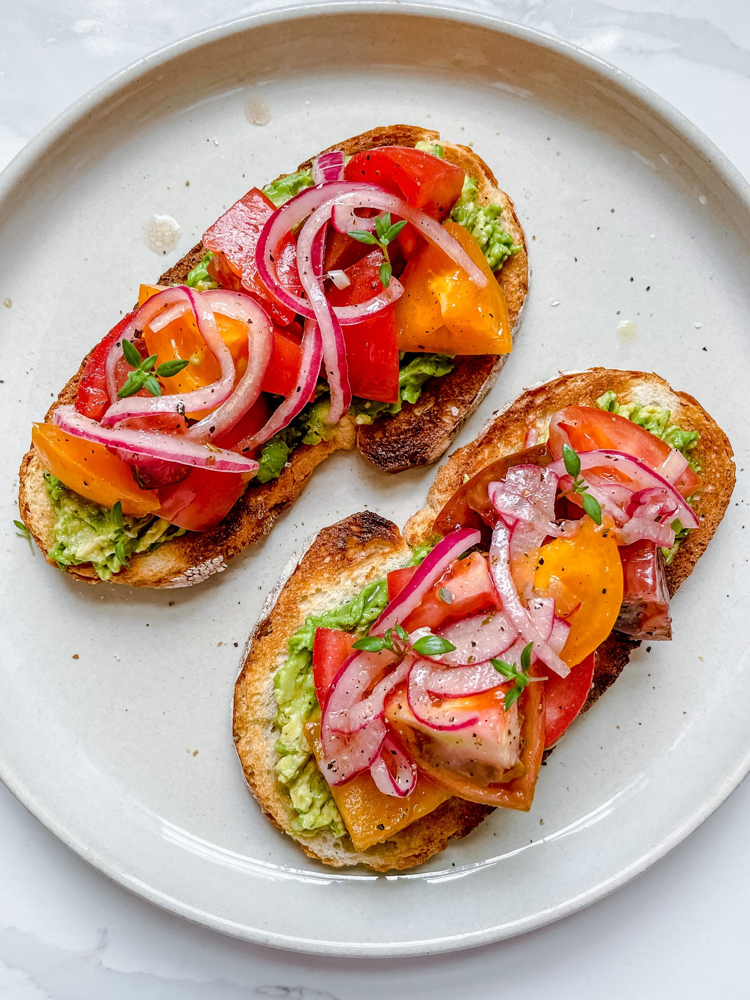

Heirloom Tomato Avocado Toast

Description
Feeling like something both simple and incredibly tasty?
With heirloom tomatos and avocado this toast is a great
choice. In addition to being delicious, it requires no cooking
experience.
Ingredients
- 2-3 heirloom tomatoes
- 1/4 cup marinated onions (see recipe here)
- 1/4 cup olive oil
- 1/2 tsp salt
- 1/2 tsp pepper
- 1 tsp oregano
- 1 tbsp apple cider vinegar
- 2 slices sourdough bread
- 1 avocado
- Handful of basil
- 1 tsp thyme
Steps
- Cut the heirloom tomatoes into medium sized chunks.
- Put tomato chunks in a bowl with olive oil, salt, pepper, oregano, and apple cider vinegar. Let sit 10-15 minutes.
- Toast sourdough slices.
- Mash avocado and spread on toast.
- Put marinated tomatoes on top of avocado and toast.
- Top toast with marinated onions, fresh basil, and thyme.